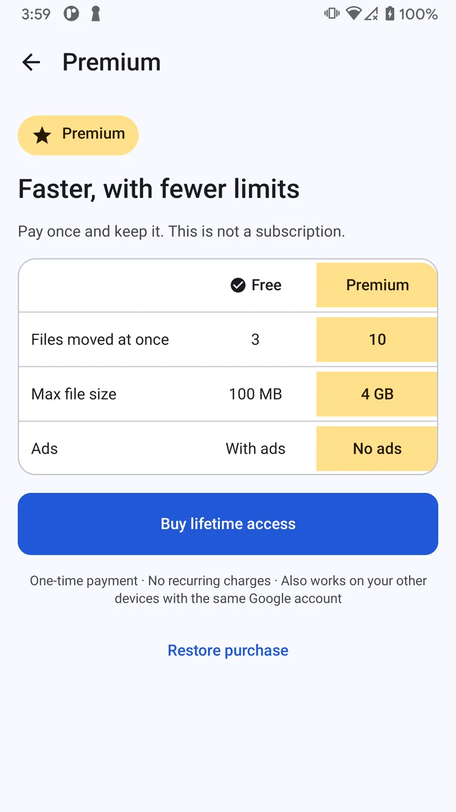

安全設計
- 每個檔案都會先複製，再以大小和雜湊值驗證。確認副本無誤後才會刪除原始檔。
- 從 OneDrive 刪除的檔案會進入 OneDrive 資源回收筒，仍可在那裡還原。
- 檔案直接在手機和 Microsoft 之間傳輸。沒有 DriveSync 伺服器，也不需要另外註冊帳號。
相片和影片會直接儲存到 DCIM/Camera，這是 Google 相簿不需額外設定就會備份的資料夾。不用選資料夾，也不用逐一開啟子資料夾備份。
檔案以原始畫質移動，一個位元組都不會改變。每個檔案驗證無誤後，才會刪除 OneDrive 上的原始檔。
Google 相簿備份完成後，把手機上的檔案清掉，就能繼續移動下一批。
是否享有無限備份，取決於你的 Pixel 機型（Pixel 5 及更早機型）和 Google 的條款。DriveSync 可在 Android 8 以上的任何手機使用；不選資料夾直接儲存到 DCIM/Camera 的功能需要 Android 10 以上。
騰出雲端空間。
騰出手機空間。選擇手機資料夾後，檔案會上傳、驗證，再從手機移除。




一次付費，非訂閱